Sebuah perjalanan jiwa menuju tanah yang diberkahi
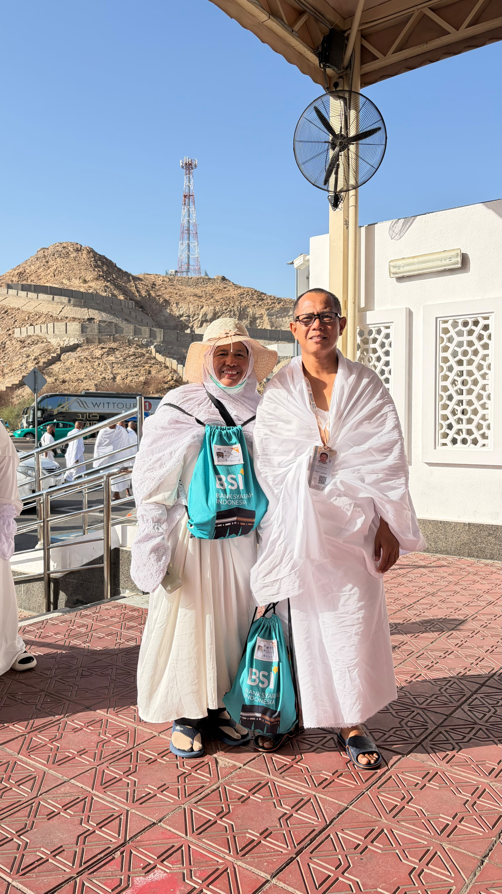
Pakaian ihram bukan sekadar kain putih. Ia adalah simbol kesetaraan — raja dan rakyat berdiri sejajar di hadapan Allah. Di sinilah perjalanan hakiki dimulai, dengan niat yang tulus dan hati yang bersih.
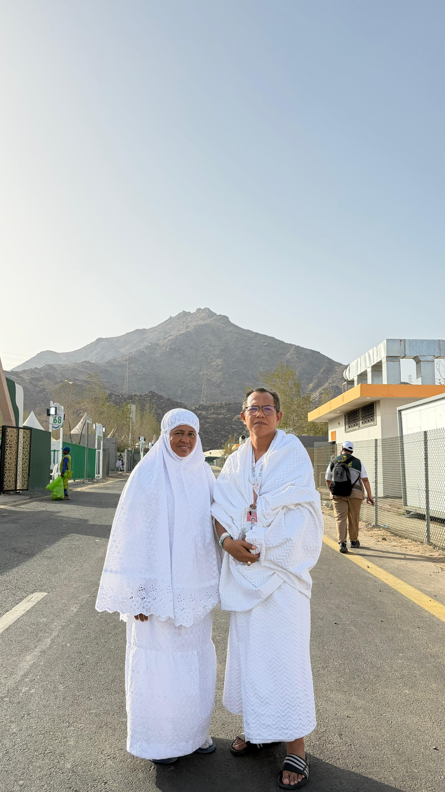
Di antara gunung-gunung batu Mina yang kokoh, dua jiwa berjalan beriringan. Perjalanan haji adalah tentang kebersamaan — menguatkan satu sama lain di setiap langkah menuju ridha-Nya.
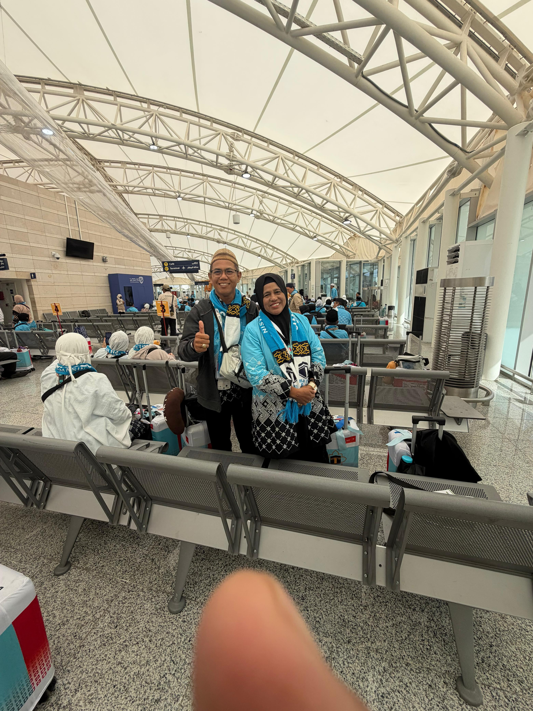
Jempol ke atas, hati melambung tinggi. Di terminal keberangkatan inilah mimpi bertahun-tahun akhirnya terwujud. Setiap langkah menuju pesawat adalah selangkah lebih dekat kepada Baitullah.
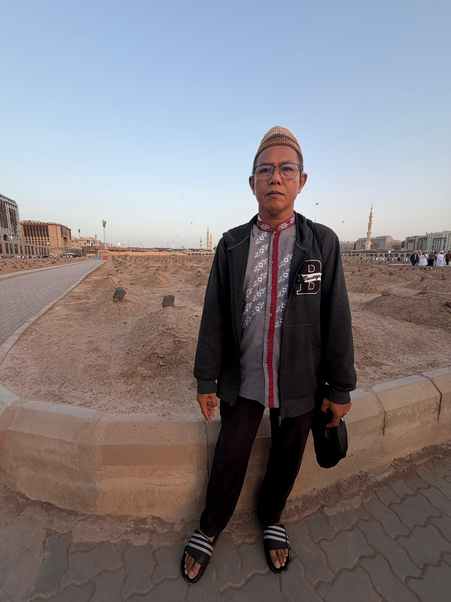
Tanah Baqi menyimpan ribuan kisah para sahabat Rasulullah ﷺ. Berdiri di sini mengajarkan satu hal: dunia hanyalah persinggahan sementara. Yang kekal hanyalah amal yang kita tinggalkan.
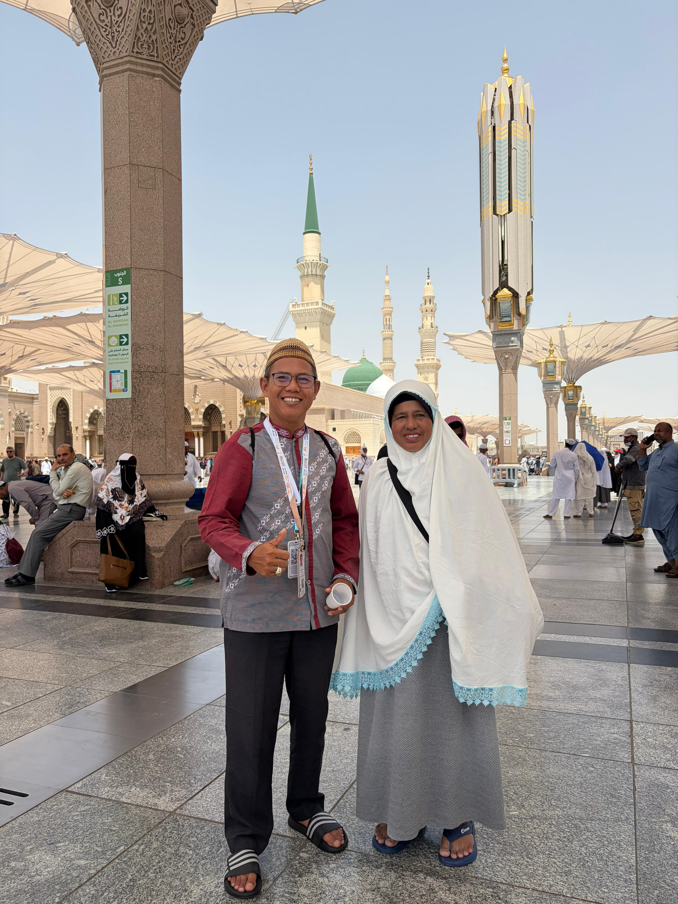
Kubah hijau menjulang di belakang, senyum mengembang di wajah. Berada di Masjid Nabawi adalah anugerah yang tak ternilai — tempat di mana setiap doa terasa begitu dekat dengan langit.
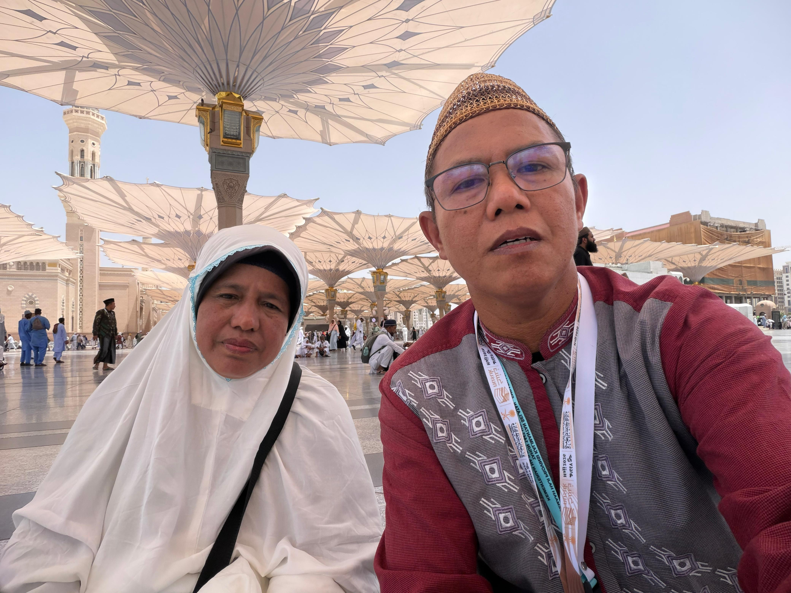
Payung-payung raksasa Masjid Nabawi mekar seperti bunga lotus. Di bawah naungannya, jutaan jiwa berbagi kerinduan yang sama. Momen ini direkam bukan untuk pamer, tapi untuk kenangan abadi.
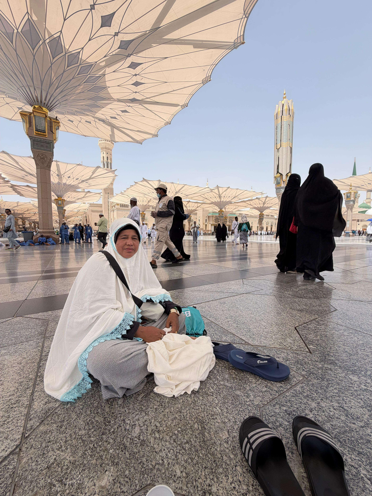
Kadang yang terbaik adalah sekadar duduk, meresapi keheningan di antara keramaian. Lantai marmer yang sejuk, angin yang berhembus lembut, dan hati yang dipenuhi syukur tak terhingga.
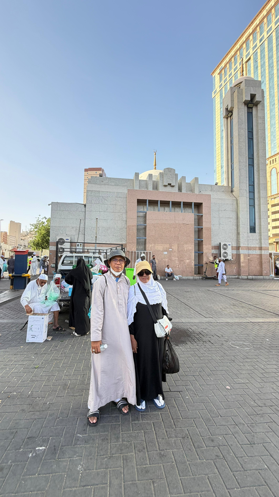
Makkah bukan sekadar kota. Ia adalah pusat semesta bagi setiap muslim. Setiap gang, setiap bukit, setiap jengkal tanahnya menyimpan sejarah yang menggetarkan sanubari.
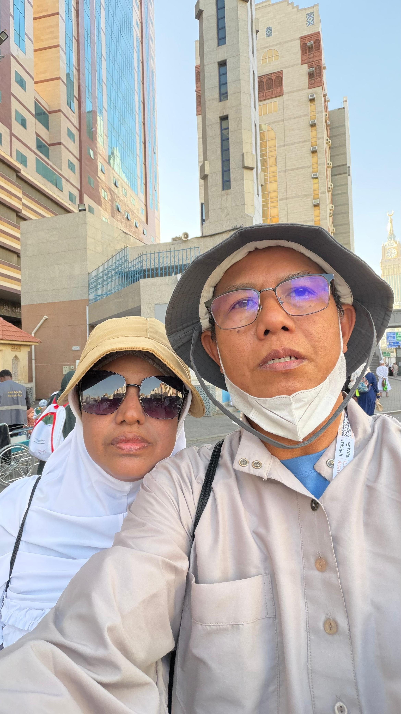
Dengan topi dan kacamata melindungi dari terik Makkah, mereka berswafoto. Di belakang mereka, Abraj Al-Bait menjulang — perpaduan modernitas dan kesakralan yang hanya ada di kota ini.
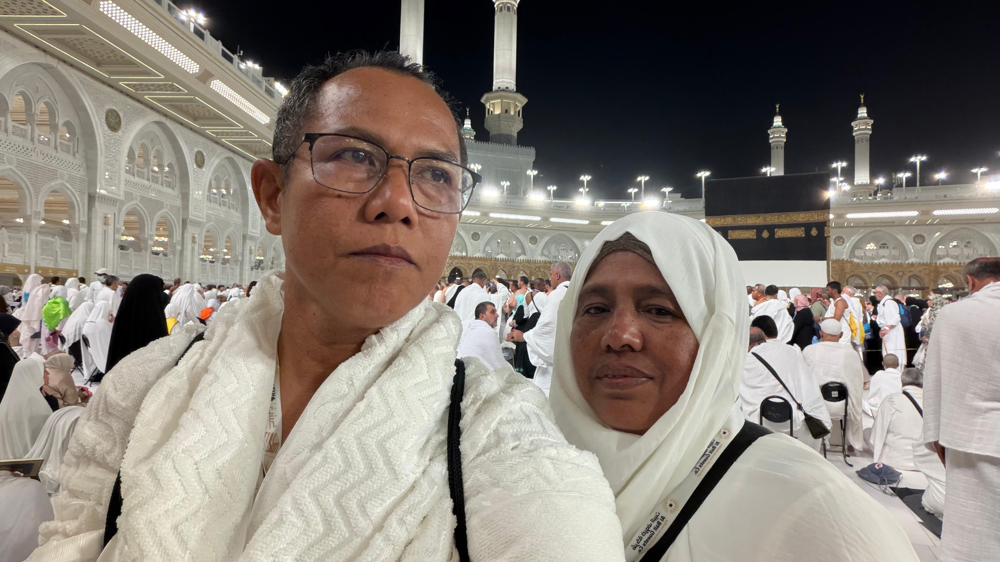
Ka'bah berdiri tegak di kejauhan, diselimuti cahaya malam yang agung. Di sinilah puncak kerinduan seluruh umat Islam terobati. Air mata haru tak tertahankan mengalir deras — ini nyata.
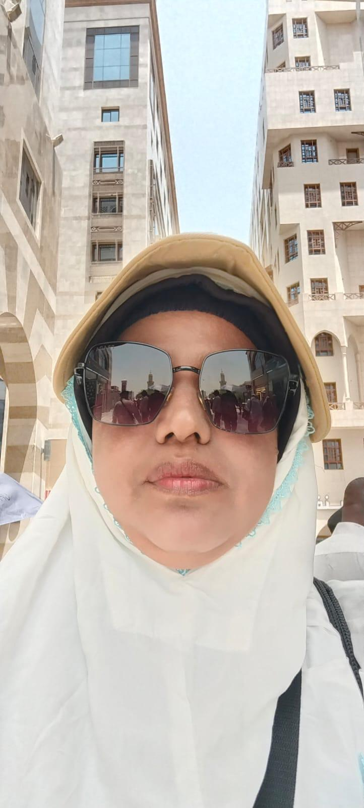
Di depan hamparan kuburan Baqi yang sederhana, jiwa diajak merenung. Tidak ada batu nisan mewah, tidak ada bunga. Hanya tanah dan kenangan. Pengingat bahwa yang kita bawa adalah iman dan amal.
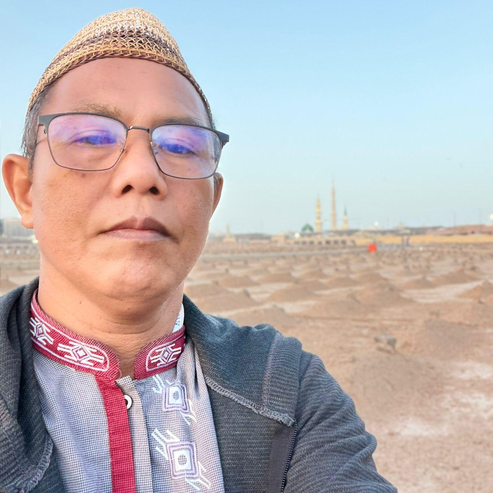
Setiap foto adalah doa yang tertunda. Suatu hari nanti, ketika dunia terasa berat, kembali melihat gambar-gambar ini akan mengingatkan: bahwa kita pernah ada di tanah yang paling dekat dengan Allah.
Semoga setiap langkah yang ditempuh menjadi tabungan pahala, setiap tetes keringat menjadi penghapus dosa, dan perjalanan suci ini menjadikan kita insan yang lebih baik. Aamiin.